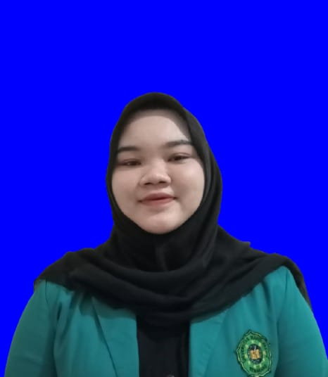

Media Pembelajaran Bahasa Indonesia
Unsur-Unsur Dalam Cerita
Cerita Rakyat Jawa Tengah
Petunjuk
Tombol untuk melanjutkan
Tombol untuk kembali
Tombol suara
Tombol untuk ke menu utama
Tombol untuk keluar
CP Dan TP
Capaian Pembelajaran :
- Menyimak
- Membaca
- Menulis
- Berbicara
Tujuan Pembelajaran :
- Melalui kegiatan berbicara dengan volume dan konteks yang tepat dan jelas, peserta didik membaca cerita atau bacaan dengan intonasi yang tepat.
- Melalui kegiatan membaca dan menyimak, peserta didik dapat memahami unsur-unsur intrinsik suatu cerita.
- Melalui kegiatan menulis, peserta didik dapat menuliskan unsur-unsur intrinsik satu cerita.
- Melalui kegiatan berbicara, peserta didik dapat mempresentasikan unsur-unsur cerita didepan kelas dengan tepat sehingga dapat menarik pendengarnya.
Materi

Latihan Soal
Hasil Latihan
Skor Anda: 0 dari 0
Profil

Biodata Pembuat:
Nama: Sofia Rochmania
NIM: 21106051043
Peran: Pengembang Aplikasi Mepsi
Email: rochmaniasofia@gmail.com
Aplikasi ini dibuat sebagai media pembelajaran interaktif untuk memahami unsur-unsur dalam cerita rakyat Jawa Tengah.
Terima Kasih!
Anda telah keluar dari aplikasi.